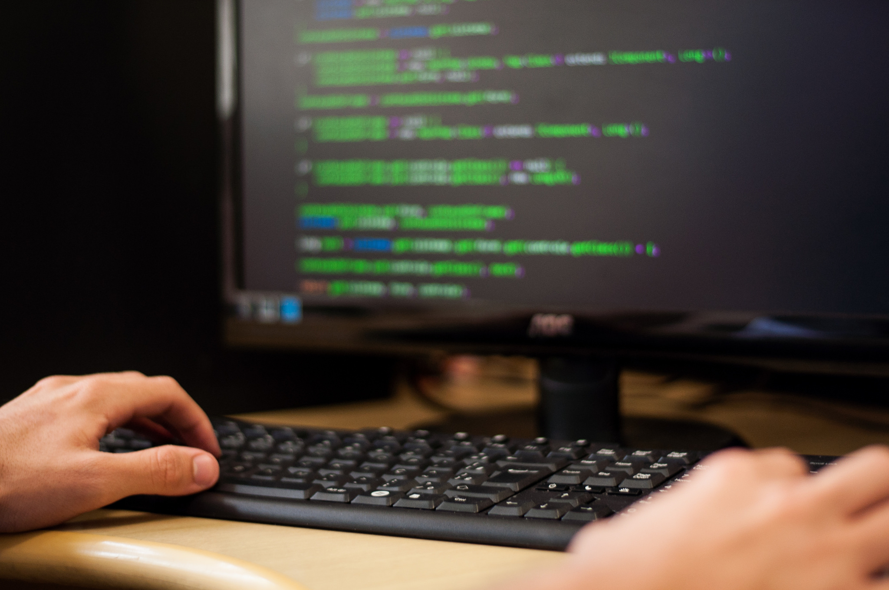

O curso de Ciência da Computação é uma área que engloba diversos
conhecimentos relacionados à computação, desde a teoria até a prática da criação
e desenvolvimento de software e sistemas computacionais.
Ele aborda temas como algoritmos, estruturas de dados, arquitetura de computadores,
inteligência artificial, segurança da informação, entre outros.
Dentro do curso de Ciência da Computação, a disciplina de Linguagem de
Programação II é uma continuação do estudo de programação iniciado em
disciplinas anteriores. Nessa matéria, os alunos geralmente aprendem conceitos mais
avançados de programação, bem como práticas e técnicas para desenvolver software
mais complexo e eficiente.

O Centro Universitário de Rio Preto (UNIRP) é uma renomada instituição de ensino superior
localizada em São José do Rio Preto, no estado de São Paulo. Fundada com o compromisso
de oferecer educação de qualidade, a UNIRP oferece uma ampla gama de cursos de graduação,
pós-graduação e extensão em diversas áreas do conhecimento. Com uma infraestrutura moderna,
corpo docente qualificado e forte integração com o mercado de trabalho, a UNIRP prepara seus
alunos para os desafios profissionais, contribuindo para o desenvolvimento regional e nacional.